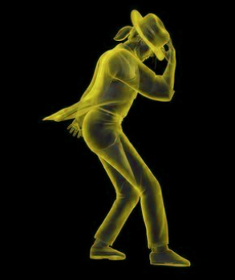
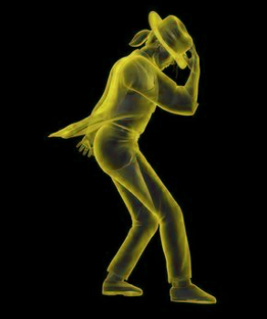
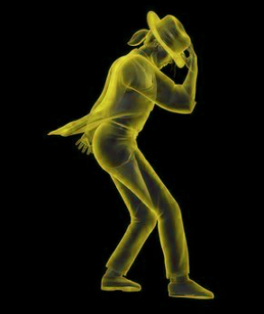
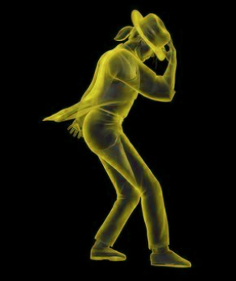

"Leave Me Alone" est une chanson de Michael Jackson qui fait partie du fameux album "Bad". Elle est sortie en 1987. Ses paroles ont été écrites par Michael Jackson et produites par Quincy Jones. Ce morceau n'est pas un single majeur mais il reste l'un des morceaux les plus iconiques de Michael Jackson dans cet album car il passe un message très fort et présente un clip vidéo emblématique. Dans cette chanson, Michael exprime son désir d'échapper de la pression médiatique notamment les paparazzi et les tabloïds car cet artiste était une cible privilégiée des médias. Il a donc écrit cette chanson sous le titre "Leave me Alone" qui signifie "Laisse moi tranquille". La chanson combine entre les éléments de pop, rock et funk qui offrent une ambiance électro et une mélodie entraînante et un ton affirmé et rebelle. Son clip vidéo est présenté sous forme d'images surréalistes et de symboles. "Leave Me Alone" est une chanson emblématique qui présente le mauvais côté de la célébrité et la souffrance des artistes célèbres par les médias.